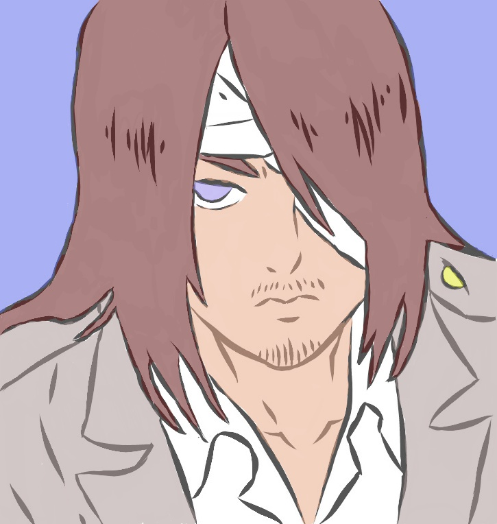
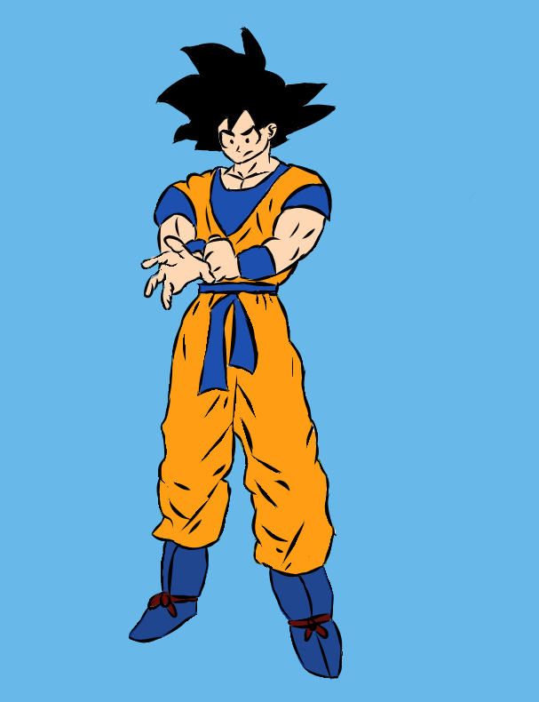
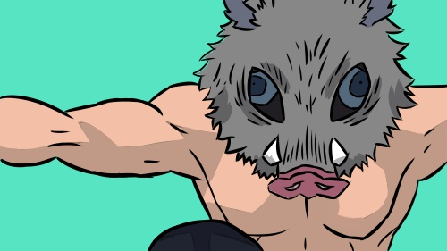
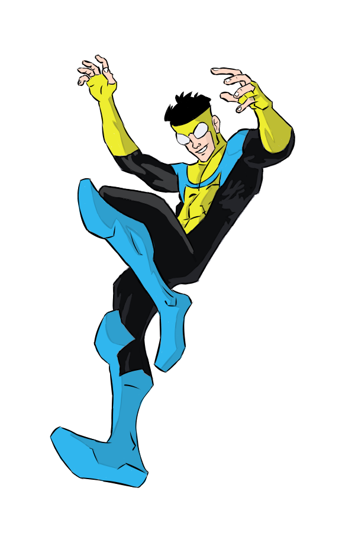
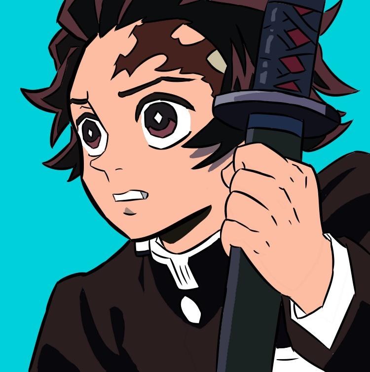
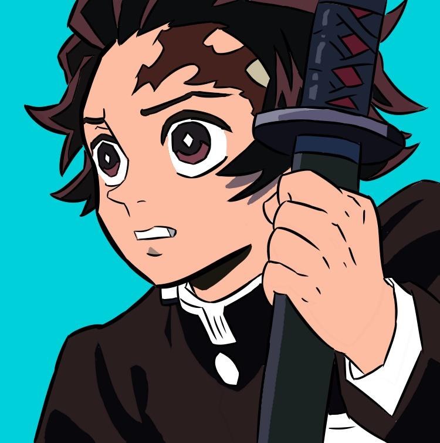
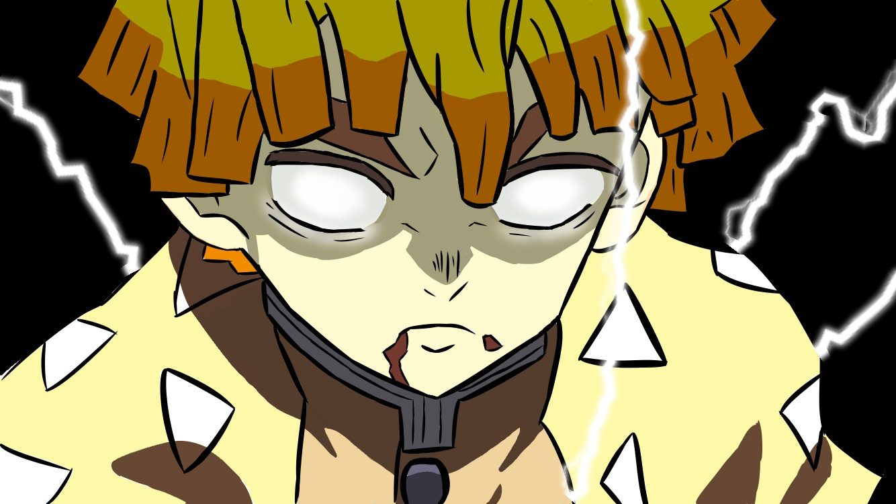

Cuphead is a run and gun shooter video game developed and published by Studio MDHR. The game follows the titular Cuphead who, in a deal with the Devil after losing a game at the Devil’s casino, is quested to repossess the souls of runaway debtors as payment for Cuphead's debt.
When man-eating Titans first appeared 100 years ago, humans found safety behind massive walls that stopped the giants in their tracks. But the safety they have had for so long is threatened when a colossal Titan smashes through the barriers, causing a flood of the giants into what had been the humans' safe zone. During the carnage that follows, soldier Eren Jaeger sees one of the creatures devour his mother, which leads him to vow that he will kill every Titan. He enlists some friends who survived to help him, and that group is humanity's last hope for avoiding extinction at the hands of the monsters.

The Elric brothers' mother is dead and their father has long since abandoned them. Deciding to perform a forbidden human transmutation to bring their mother back, they end up losing their bodies. Now Edward must join the military in order to gain certain alchemical privileges, with his one goal being to restore his brother to his original state. But with war on the horizon it's only a matter of time before they are both forced to question their morals and ultimately decide the value of human life
"Dragon Ball Z" follows the adventures of Goku who, along with the Z Warriors, defends the Earth against evil. The action adventures are entertaining and reinforce the concept of good versus evil. "Dragon Ball Z" teaches valuable character virtues such as teamwork, loyalty, and trustworthiness.
 Seventeen-year-old Mark Grayson is just like every guy his age, except that his father is Omni-Man, the most powerful superhero on the planet. As Mark develops powers of his own, he discovers his father's legacy may not be as heroic as it seems.

Pokémon is a Japanese media franchise managed by The Pokémon Company, a company founded by Nintendo, Game Freak, and Creatures. The franchise was created by Satoshi Tajiri in 1996, and is centered on fictional creatures called "Pokémon".

The Imperial Forces, under orders from cruel Darth Vader, hold Princess Leia hostage in their efforts to quell the rebellion against the Galactic Empire. Luke Skywalker and Han Solo, captain of the Millennium Falcon, work together with the companionable droid duo R2-D2 and C-3PO to rescue the beautiful princess, help the Rebel Alliance and restore freedom and justice to the Galaxy.

After the fall of the Galactic Empire, a lone gunfighter makes his way through the outer reaches of the lawless galaxy.


Many years ago, in the hidden village of Konoha, lived a great demon fox. When it swung one of it's nine tails, a tsunami occurred. The fourth hokage sealed this demon fox inside a boy in exchange for his own life. Naruto was that boy, and he grew up with no family, and the villagers hated him thinking that he himself was the demon fox. Naruto's dream is to become Hokage, and have the villagers acknowledge him.
 
After a demon attack leaves his family slain and his sister cursed, Tanjiro embarks upon a perilous journey to find a cure and avenge those he's lost.

After a demon attack leaves his family slain and his sister cursed, Tanjiro embarks upon a perilous journey to find a cure and avenge those he's lost.

Yuji Itadori, a kind-hearted teenager, joins his school's Occult Club for fun, but discovers that its members are actual sorcerers who can manipulate the energy between beings for their own use. He hears about a cursed talisman - the finger of Sukuna, a demon - and its being targeted by other cursed beings.
